祝日入りカレンダーと、毎日の12星座占い。
開くたびに、セトカンが微笑む。
開くたびにちがう表情のセトカンに会えるカレンダーと、セトカンが届ける今日の占い。スマホでもパソコンでも、無料で使えます。
無料でカレンダーを開く無料・インストール不要・メールアドレスだけで開始
スマホの中に、14か月分のときめきを。
予定を確かめるたびに、笑顔に会える。朝の占いが、そっと背中を押してくれる。
毎日を少しだけ楽しみにする、小さなカレンダーです。
まずは、実際の画面をご覧ください。
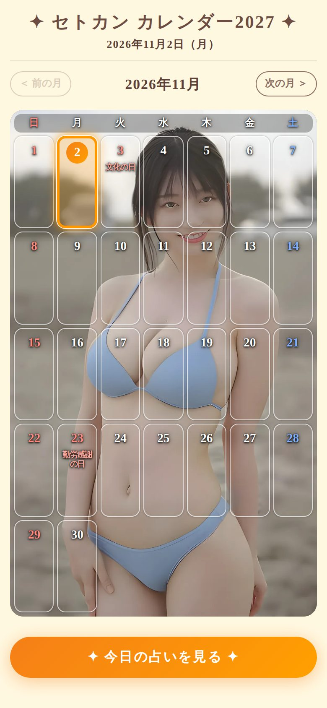
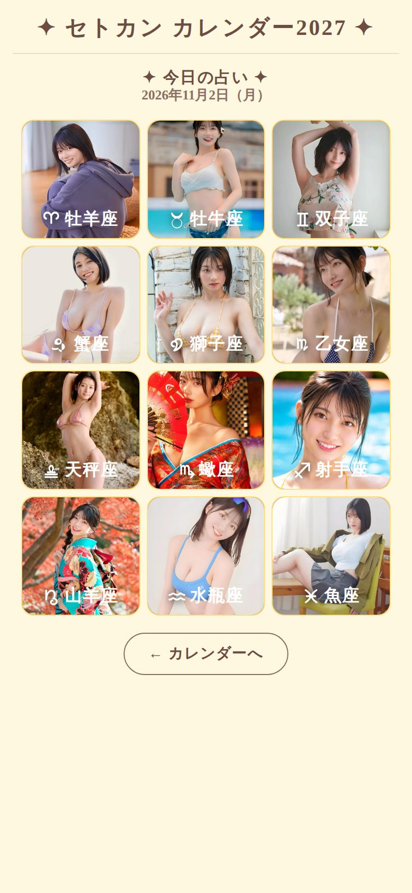
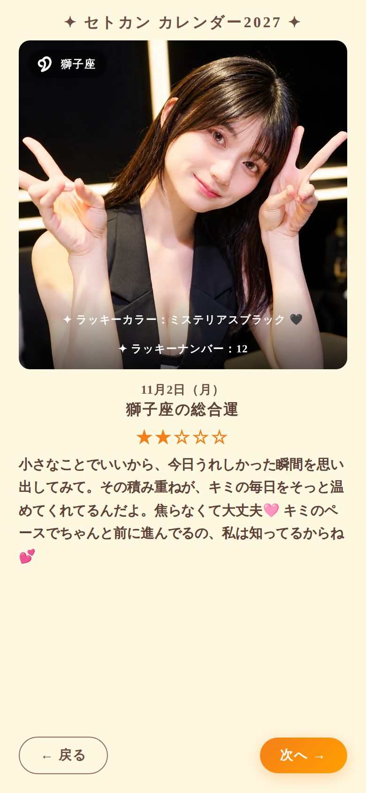
第一幕
ときめきは、毎朝やってくる
朝いちばんに、会いたい人がいる。
目覚ましを止めて、ひと息ついたら、カレンダーを開く。そこには今日も、とびきりの笑顔が待っています。
セトカン カレンダー2027は、開くたびにちがう表情のセトカンに会える、ウェブ版のカレンダーです。予定を確かめるついでに、ふっと心がほどける。そんな朝が、明日から始まります。
いつもの日付が、ちょっと特別に見える。
同じ数字が並んでいるだけなのに、背景に笑顔があるだけで、毎日が少し華やぐ。
開くたびに、月をめくるたびに、新しい表情に出会えます。今日の日付には印がつくので、ひと目で今日がわかります。
ほんの数秒で、気分が変わる。そんな体験、してみたくありませんか？
その笑顔に、今日も会いにいく。
予定を確かめるだけの時間が、ちょっとしたご褒美になる。セトカン カレンダーは、毎日の小さな楽しみを、あなたのスマホに届けます。
疲れた日にも、そっと寄り添ってくれる。
今日の占いには、あなたを責める言葉はひとつもありません。
頑張りすぎた日も、うまくいかなかった日も。毎日のメッセージは、あなたの一日をそっと受けとめる、やさしい言葉でできています。
明日の朝、最初に会いたいのは誰ですか？
無料でカレンダーを開く無料・インストール不要・メールアドレスだけで開始
第二幕
開くたびに、表紙が変わる
開くたびに、ちがうセトカンに出会う。
2026年11月から2027年12月まで。カレンダーを開くたび、月をめくるたびに、表紙のセトカンが入れ替わります。
同じ写真が続かないように選ばれるから、何度開いても新鮮。次はどんな笑顔だろうと、つい開きたくなります。
めくるたびに、こんな表紙が待っています。
2026年11月から2027年12月まで、全14か月。たとえば、こんな表紙に出会えます。横にスクロールして、のぞいてみてください。
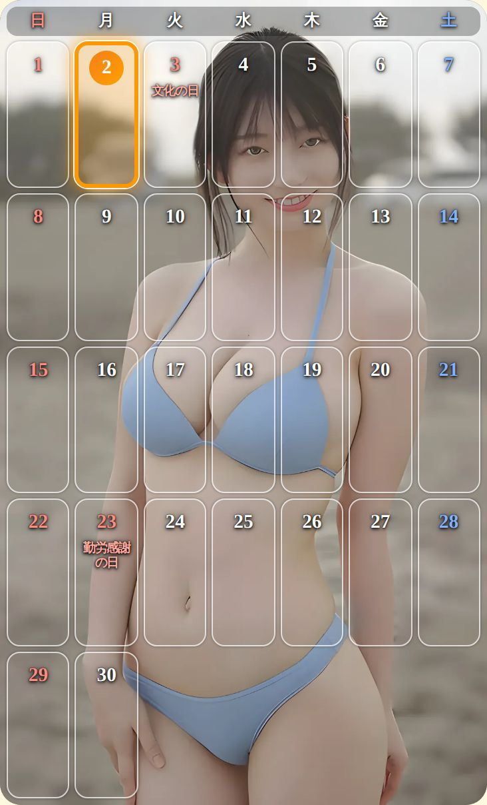
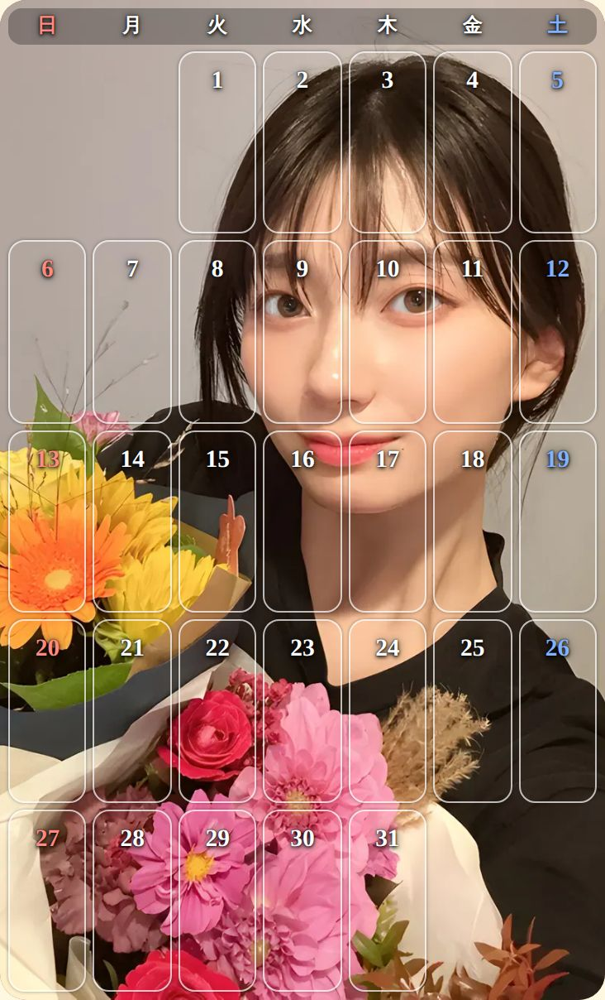
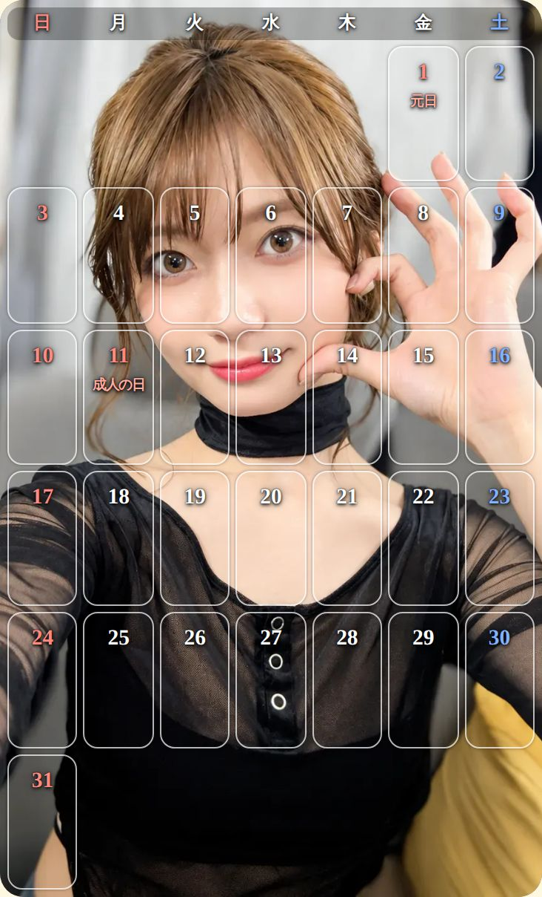
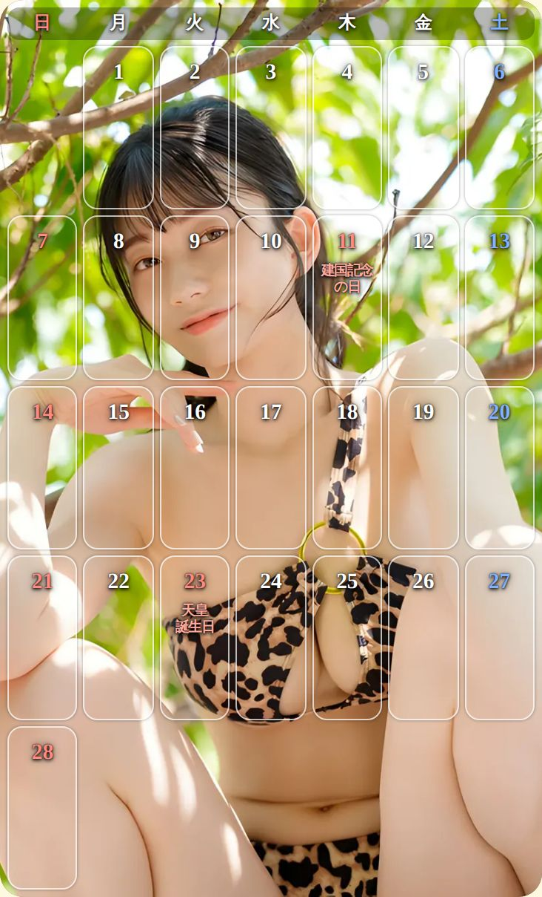
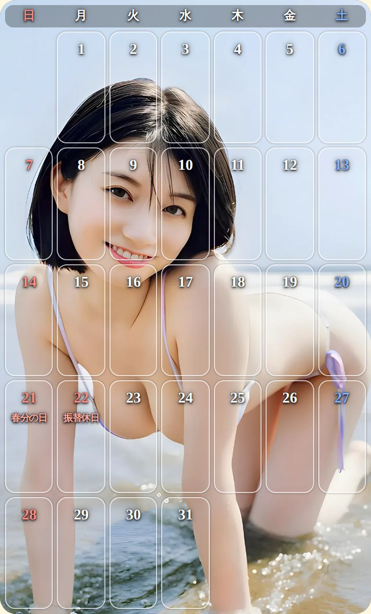
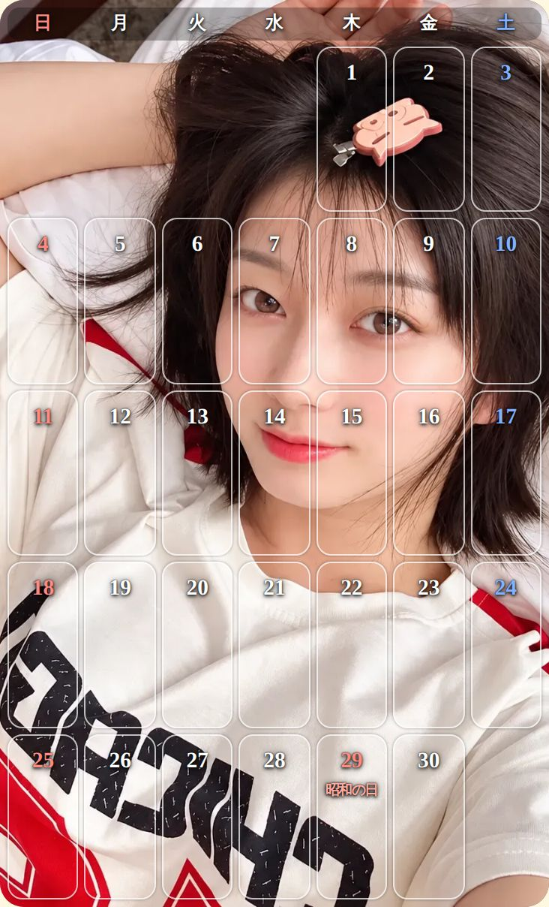
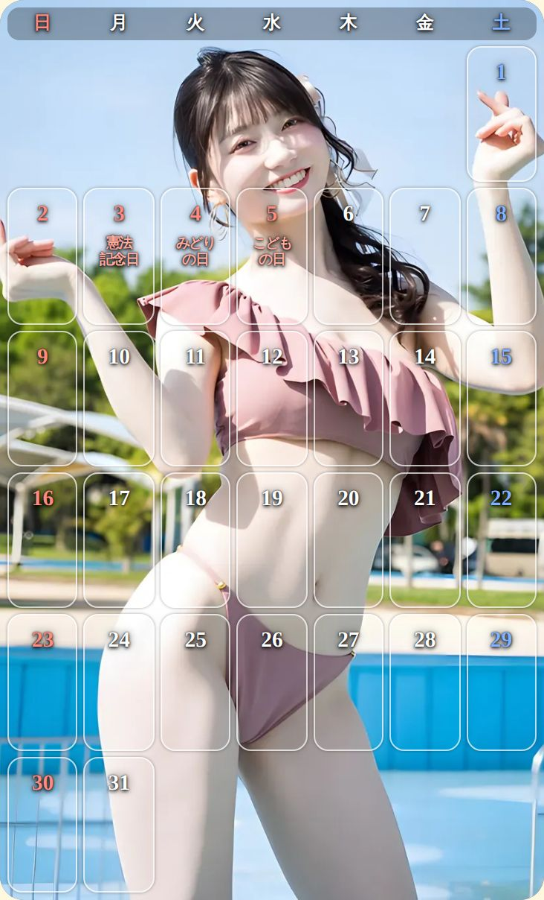
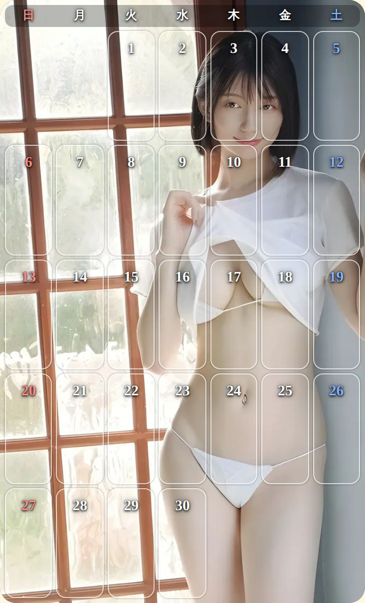
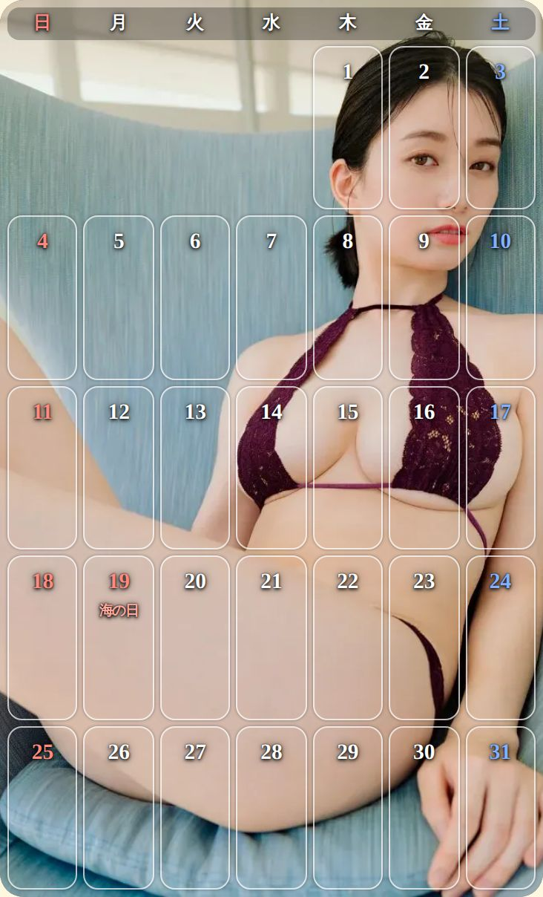
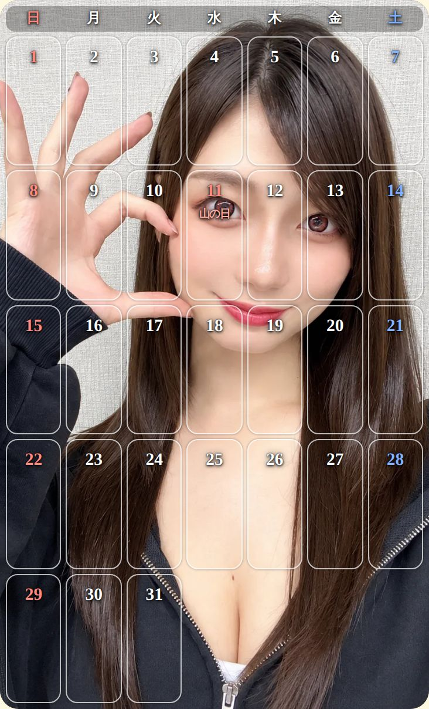
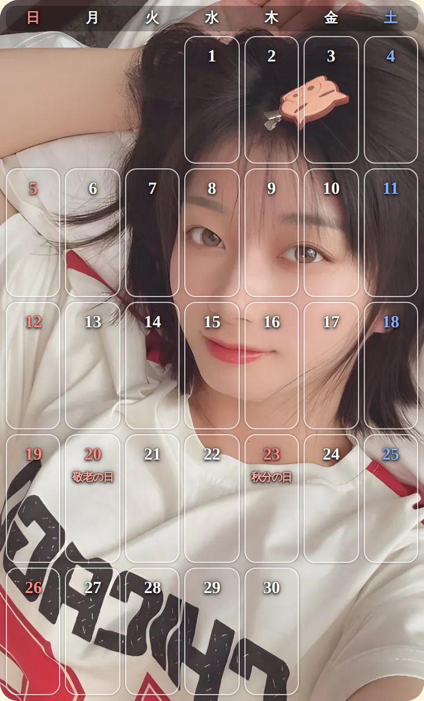
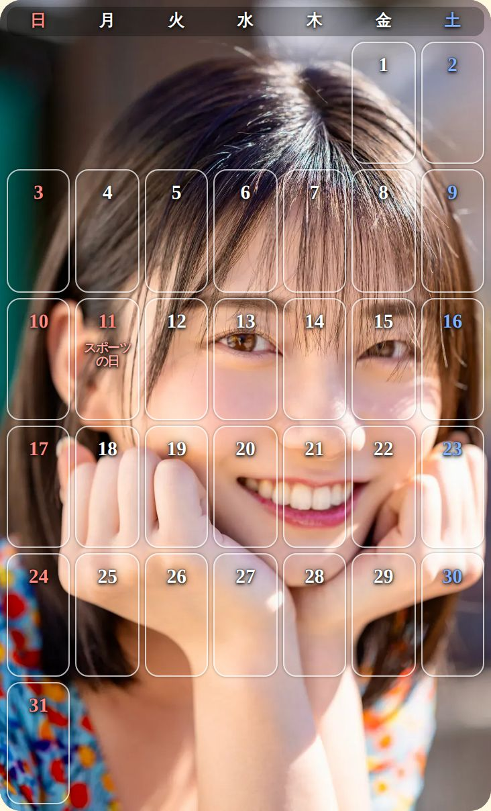
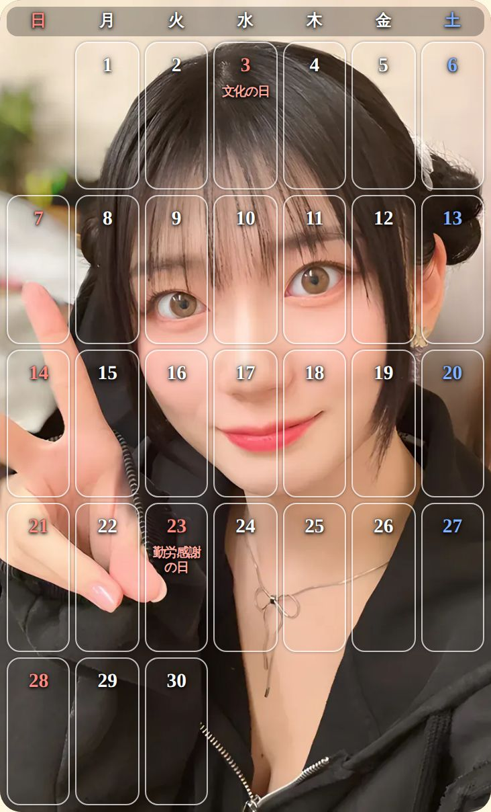
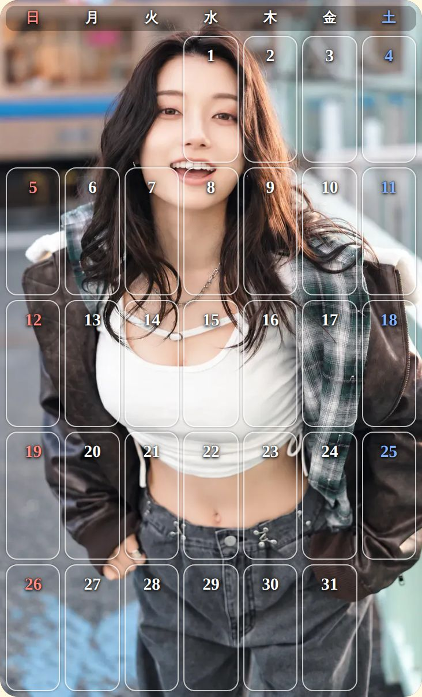
祝日も、ひと目でわかる。
祝日は赤い文字で、名前も入っています。土曜は青、日曜は赤。
年末年始も、ゴールデンウィークも、お盆の連休も。開けばすぐに見渡せるから、楽しみな予定を考える時間が増えていきます。
今日の日付を押せば、占いが開く。
カレンダーの今日の日付を押すと、そのまま今日の占いへ。
予定を確かめて、運勢を見て、一日を始める。いくつものアプリを行き来しなくても、ここだけで朝の準備がととのいます。
次に開いたら、どんな笑顔だろう。そう思うだけで、明日が少し楽しみになりませんか？
めくるたびに、新しいときめき。
朝に開いて、夜にもう一度。そのたびに新しい笑顔が待っているから、カレンダーを開くことそのものが、小さな楽しみになります。
次のセトカン、見てみたくありませんか？
次のセトカンに会いにいく無料・インストール不要・メールアドレスだけで開始
第三幕
今日の占いが、背中を押す
12星座の、今日の運勢。
カレンダーの下のボタンを押すと、12星座それぞれのセトカンが並びます。あなたの星座を選ぶだけ。
占いは、毎日その日だけのもの。だからこそ、毎朝ひらく理由になります。
試しに、あなたの星座を選んでみてください。
今日の運勢を、星の数でお見せします。
総合運、恋愛運、仕事運、金運。
4つの運勢を、星の数とメッセージで。ページをめくるたびに、ちがう表情のセトカンが今日のあなたを占います。
ラッキーカラーとラッキーナンバーも、毎日変わります。服を選ぶとき、何かに迷ったときの、ちょっとした合図にどうぞ。
言葉が、ゆっくりと届く。
メッセージは、一文字ずつ、語りかけるように表示されます。
急かされることのない、静かな時間。読み終えるころには、肩の力が少し抜けているはずです。
そう言ってくれる人が、毎朝そばにいてくれたら？
今日のあなたは、きっと大丈夫。
占いの結果に一喜一憂するためではなく、今日を気持ちよく始めるために。セトカン カレンダーの占いは、あなたの一日をやさしく後押しします。
今日のあなたの運勢、気になりませんか？
今日の占いを見る無料・インストール不要・メールアドレスだけで開始
第四幕
毎日の、小さな習慣に
ホーム画面に置けば、アプリのように。
ホーム画面に追加すれば、アイコンをタップするだけで、すぐに開けます。
アプリストアからのダウンロードは不要です。iPhoneなら追加の手順も画面で案内されるので、迷わず置けます。
朝の1分が、一日を変える。
カレンダーで今日を確かめて、占いでひと息。ほんの1分の、自分だけの時間。
大きな変化はいりません。毎朝の小さな楽しみが、一日の始まりを少しだけ軽くしてくれます。
スマホでも、パソコンでも。
ブラウザがあれば、どこでも開けます。
通勤電車ではスマホから、仕事の合間にはパソコンから。いつでも、セトカン カレンダーに会いにいけます。
明日を待ち遠しく思えたのは、いつ以来ですか？
毎日が、少しだけ楽しみになる。
朝、スマホを開く理由がひとつ増える。それだけで、毎日の景色は少し変わります。
明日の朝から、始めてみませんか？
セトカン カレンダーを使ってみる無料・インストール不要・メールアドレスだけで開始
終幕
無料で、今日から
お金は、一円もかかりません。
セトカン カレンダー2027（ウェブ版）は、無料で使えます。
カレンダーも、毎日の占いも、すべて無料。気軽に開いて、気に入ったら毎日の習慣にしてください。
始める前に、気になることはありませんか？
無料
カレンダーも、毎日の占いも、すべて無料で使えます。
インストール不要
ブラウザで開くだけ。アプリストアからダウンロードする必要はありません。
メールアドレスだけ
最初にメールアドレスを入れて、スタートを押すだけ。パスワードも会員登録もいりません。
始めるのは、メールアドレスだけ。
最初の画面でメールアドレスを入れて、スタートを押すだけ。
パスワードも、会員登録もいりません。一度始めれば、次からは開くだけで、すぐにカレンダーが表示されます。
届くのを、待たなくていい。
セトカン カレンダー2027は、スマホやパソコンで見る「ウェブ版」のカレンダーです。
紙のカレンダーをお届けするものではありません。そのかわり、ボタンを押したその瞬間から、今日のセトカンに会えます。
よくある質問
- 本当に無料ですか？
- はい。カレンダーも毎日の占いも、すべて無料でお使いいただけます。
- 入力したメールアドレスは、何に使われますか？
- プログラムによる自動アクセス（ボット）を防ぐ目的で、はじめにメールアドレスを入力していただいています。お手数ですが、正確なメールアドレスをご入力ください。
- スマートフォンにインストールする必要はありますか？
- いいえ。ブラウザで開くだけで使えます。ホーム画面に追加すれば、アプリのようにアイコンから開くこともできます。
- 紙のカレンダーが届くのですか？
- いいえ。セトカン カレンダー2027は、スマートフォンやパソコンで見る「ウェブ版」のカレンダーです。
- いつからいつまでのカレンダーですか？
- 2026年11月から2027年12月までの14か月分です。今日の占いは、毎日その日の運勢が表示されます。
開くたびに、セトカンが微笑む。毎日に、小さなときめきを。
さあ、明日の朝を楽しみに。
カレンダーと、今日の占いと、とびきりの笑顔。あなたのスマホに、毎日の楽しみをひとつ増やしませんか？
無料でカレンダーを開く無料・インストール不要・メールアドレスだけで開始